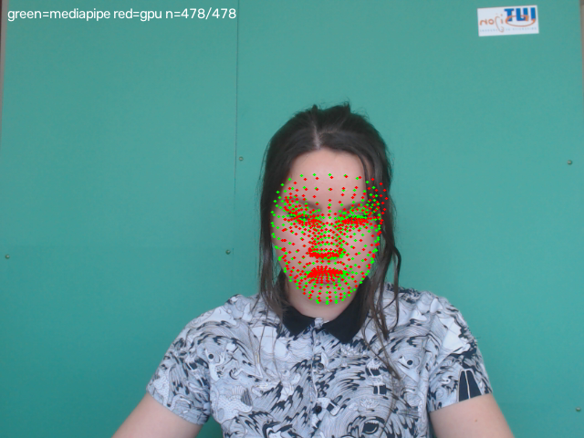
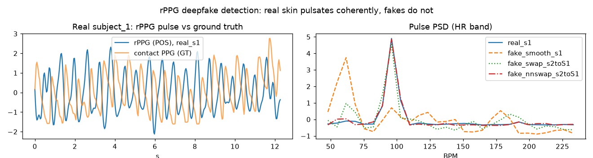

Watch the face
Track landmarks in every frame — MediaPipe face mesh is the extraction reference, SCRFD + mesh on CUDA the equivalent GPU path — and split the skin into 3 zones plus the full face.
Blood flow makes every face faintly change colour at the heartbeat — a camera sees it, a generator doesn't. This model learns that signature: a tiny neural net fed with camera-pulse statistics, trained on 50/50 real-vs-AI windows, shipped as an INT8 artifact of 4 KB that runs anywhere.
Track landmarks in every frame — MediaPipe face mesh is the extraction reference, SCRFD + mesh on CUDA the equivalent GPU path — and split the skin into 3 zones plus the full face.
Zonal RGB means feed the POS algorithm — the blood-volume pulse, invisible to the eye, becomes a signal.
Per window (12 s, stride 6 s): pulse strength per zone, zone teamwork, heart rate, 24 spectral shape bins, 4 band power ratios.
A tiny MLP (36 → 24 → 2) scores each window. P(REAL) ≥ 0.5 = real; the hard decision is INT8 end-to-end.

The zones land in the right place. Two independent landmark methods agree within a few pixels — the traced colour zones sit on skin, where the pulse actually lives.

The feature is the heartbeat. The camera-derived pulse (blue) matches a gold-standard contact sensor (orange) on real footage — this is the signal the net learns to expect.
| group | values | meaning |
|---|---|---|
| SPR | 4 | pulse peak-to-floor (dB) in forehead, both cheeks, full face |
| PSD shape | 4 | band power ratios: four sub-bands of the heart-rate spectrum (0.7–4.0 Hz) |
| PSD shape | 24 | log-PSD outline of the HR band, resampled — the spectral fingerprint |
| Coherence | 3 + 1 | correlation of POS pulses between all zone pairs, plus their mean |
| TOTAL | 36 | one window → one 36-number vector |
Generated faces have no blood volume pulse: their SPR is weak or absent, the zones disagree, and the spectrum is shapeless. The net learns exactly that contrast — and also learns the exceptions the hard thresholds can't express.
| family | clips | length | windows | what it is |
|---|---|---|---|---|
| EMO / EMO2 | 13 | 9:36 | 77 | diffusion talking faces (CVPR'24 EMO + EMO2); the source portraits are AI-generated too — no real person enters the pool |
| Pexels AI stock | 11 | 7:52 | 61 | AI-themed live footage: red-laser face-scan shots, a brush-painted face, head turns to back-of-head |
| TOTAL | 24 | 17:28 | 138 | every clip's provenance lives in tmp/ai_pool/manifest.json |
Deliberately harder than classic face swaps: fully generated motion + lighting, video up to 4K/8K, profile poses, head turns that drop the face mid-window. The real side is the unchanged camera benchmark — the only allowed operation is windowing by decoding, never re-encoding.
identities pooled over the 5 folds — 44 real + 24 AI — assigned round-robin to folds, so the model's score on a face is always for a face it has never seen. Standardization, calibration and the INT8 quant ranges are fitted on the training fold only, then applied to the test fold.
| fold | test windows | INT8 window accuracy |
|---|---|---|
| 1 | 41 | 0.93 |
| 2 | 53 | 0.85 |
| 3 | 62 | 0.73 |
| 4 | 65 | 0.78 |
| 5 | 55 | 0.89 |
| mean | 276 windows total | 0.835 ± 0.072 |
Each output neuron of both layers gets its own int8 scale: full-res weights divided by their per-column max over ±127.
a1 = max|X| (input), a2 = max|h| (hidden); activations quantize at step range/127. Logits stay fp32 — softmax only needs their shape.
During validation the INT8 artifact matched (noise-regularized slightly beat) the fp32 baseline — so the ladder was cut to INT8: one file, one code path.
Getting here took two fixes that are easy to get wrong (both verified on the trained model): the hidden activations were once calibrated with the logit range (21.2) instead of their own (7.9) — every hidden unit rounded to zero; and the activation quant step once used the full range instead of range/127 — a three-level quantizer. With step = range/127 in place, INT8 correlates 1.0 with the fp32 forward on the same data.
import numpy as np
z = np.load('int8_model.npz') # int8_model.npz (4 KB) from the release
x = (features_36 - z['mu']) / z['sd'] # standardize like training
h = np.maximum(np.round(x / (z['a1']/127)) @ (z['W1_q'] * z['W1_scale']) + z['b1'], 0)
h = np.round(h / (z['a2']/127))
logits = h @ (z['W2_q'] * z['W2_scale']) + z['b2']
p_real = np.exp(logits - logits.max()) / np.exp(logits - logits.max()).sum()
p_real = p_real[1] # P(REAL): >= 0.5 → real faceThe same 12 lines run in JavaScript / C on microcontrollers — the weights are 8-bit, the only floats are two softmax ops.
Synthetic clips are used for research evaluation only; every asset is linked in the manifest.
pip install uv && uv sync # libraries
uv run python tools/fetch_ubfc_faces.py # real side: 316 MB benchmark (resumable)
uv run python tools/build_ubfc_faces.py # rebuild 42 subjects → UBFC_FACES/
uv run python tools/train_rppg_detector.py # build 50/50 windows, train, export the INT8 npzINT8 detector weights (4 KB): GitHub release ↗
→ drop int8_model.npz into models/rppg_mlp/. The run log with every fold is attached to that same release.
Face-tracking models (716 MB), if you want to re-extract from raw video: GitHub release ↗
— inswapper_128.onnx, mesh.onnx into models/; det_10g.onnx, w600k_r50.onnx into models/buffalo_l/.